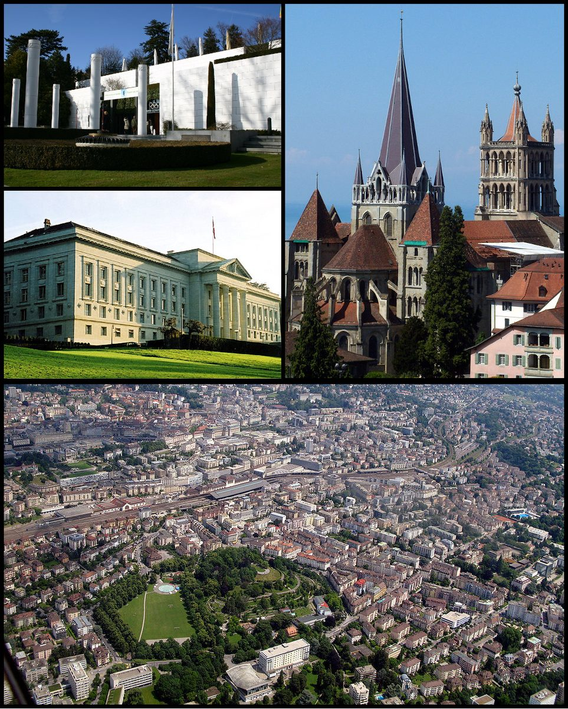

On this day

On This Day in 2013: Magnus Carlsen Dethrones Viswanathan Anand in Chennai
The 22-year-old Norwegian grandmaster secured a 6½–3½ victory in Game 10 to claim his first undisputed world chess championship.

On This Day in 2022: Qatar Kicks Off First Middle East World Cup
Enner Valencia's opening-night brace launched a 29-day winter tournament that concluded with a record 172 goals and Argentina's third title.

On This Day in 2005: Australia Ends 31-Year Wait to Qualify for World Cup
The Socceroos defeated Uruguay in a dramatic penalty shootout at Stadium Australia to reach the 2006 FIFA World Cup.

On This Day in 2010: Sebastian Vettel wins first F1 title to become youngest champion
Red Bull Racing's German star secured the Drivers' Championship at the Abu Dhabi Grand Prix, launching a four-year era of dominance for the team.

The $500 Gamble: How Pudge Heffelfinger Became Football’s First Professional
On November 12, 1892, a secret transaction in Pennsylvania forever altered the landscape of American sport.

A Turning Point for Fair Play: The Birth of the World Anti-Doping Agency in Lausanne
Established on November 10, 1999, the international body united governments and the Olympic movement to safeguard the integrity of sport.

The Preacher's Punch: When 45-Year-Old George Foreman Reclaimed the Heavyweight Title
On this day in 1994, George Foreman knocked out the unbeaten Michael Moorer in the 10th round in Las Vegas to become the oldest heavyweight champion in history.